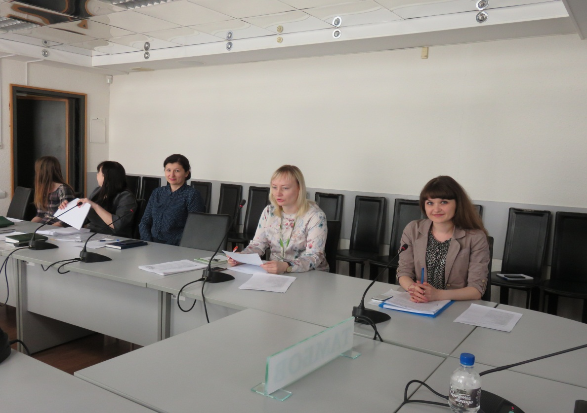
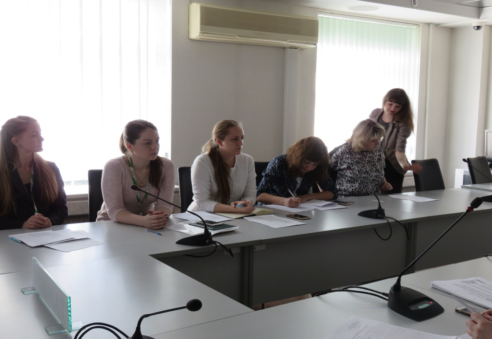
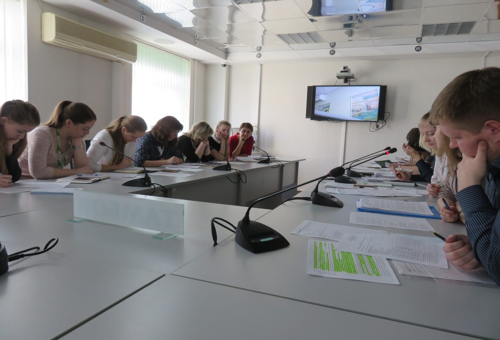

Семинар с представителями ПАО Сбербанк
13 апреля 2017 года на базе Публичного акционерного общества «Сбербанк России» (далее – Банк-партнёр) прошёл семинар, организованный акционерным обществом Микрокредитная компания «Фонд содействия кредитованию малого и среднего предпринимательства Тамбовской области» (далее – Фонд) на тему: «Новые условия взаимодействия АО МК «Фонд содействия кредитованию малого и среднего предпринимательства Тамбовской области» с финансовыми организациями».
Семинар прошёл в формате видеоконференц-связи с представителями дополнительных офисов Банка-партнёра из Мичуринска, Жердевки и Уварово, а также с начальниками отделов и кредитными инспекторами ПАО Сбербанк города Тамбов.
В рамках семинара были рассмотрены новые условия предоставления поручительств субъектам малого и среднего предпринимательства по кредитным договорам, по договорам банковской гарантии и взаимодействие с АО «Федеральная корпорация развития малого и среднего предпринимательства».
По итогам семинара определены направления сотрудничества, порядок и формы взаимодействия Фонда и Банка-партнёра.


